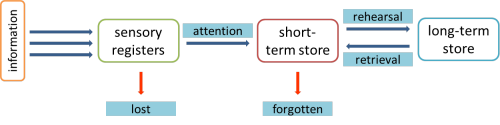

Four ways to unlock learning potential
There isn't a word in English to describe something midway
between a method and a technique. Procedure is the best we can
find.
The term is slightly misleading because these are not procedural
techniques like drilling, nominating, waiting and so on. Nor
are they purely teaching behavioural formulae such as concept
checking or Dictogloss.
The four procedures, for want of a better word, described here
underlie a good deal of teacher behaviours in the classroom which
can lead to real learning.
 |
Why these four? |
Good question.
There is, of course, a very large range of possible procedures and
techniques which good teachers use appropriately to enhance learning
in the classroom.
Some are managerial issues such as grouping learners effectively,
nomination, drilling, concept checking, instructional language,
questioning and so on.
Others are purely techniques such as eliciting, dictation of one
kind or another, using games, using music, song and poetry, schemata
activation, warmers and so on.
What is special about these four is that they are at one stage
removed from pure technique because they are the reasons why the
technique is employed.
It can be envisioned like this:
The graphic is intended to show that these four ideas lie at the
heart of much good teaching (not all of it) and are surrounded by a
cloud of second-level behaviours which depend on one or more of the
key ideas. The outer ring is meant to be indicative rather than exhaustive.
If you have taken an initial training course, you may well be
familiar with all the techniques in the outer ring because
second-level behaviours such as the ones listed above constitute a
good deal of what participants on such courses learn about and
should be
able to employ in the classroom. Many are taught by
demonstration and modelling followed by imitation by the trainee.
However, rarely mentioned on such courses is why the techniques are
being employed at all because such courses are usually short and
staunchly practical with little time or interest to discover deeper
reasons why we do the things we do in the classroom.
One reason why this guide is in the Delta section, although it is
linked from elsewhere, too, is that an essential difference between
initial- and diploma-level training lies precisely in investigating
what underlies good practice.
These four top-level ideas are:
- Noticing
- Input vs. output
- Inferencing
- Scaffolding
All four depend on four overarching hypotheses to do with learning and we'll summarise those first to set the scene.
Overarching hypotheses |
It has not gone unnoticed by most language teaching professionals
that learning only happens when the learner is ready for it to
happen. Most teachers have experienced times when they know
that what they are doing is not working in the sense that, although
the learners may seem busy, involved and active, nothing new is
being acquired.
At other times, the golden classroom moments, we have also been
aware that what is happening is contributing to real progress.
Learners are moving on, almost visibly, from where they were towards
where they want to be.
Underlying this phenomenon are four connected hypotheses concerning
what happens when people learn.
  |
This is not to do with grand theories of
motivation concerning, for example, the difference between
intrinsic and extrinsic motivation or between instrumental
and integrative motivation. For that, see the guide to
motivation linked in the list of related guides at the end. Here, the concern is based more on the individual's understanding of what is useful and usable. There are three related elements:
This is the basic starting point for learning. If valence, expectancy and instrumentality are all low, learning is unlikely to happen no matter how entertaining and interesting the lesson is. |
 |
This is a key concept and describes where the learners' current
language mastery stands on a scale from knowing nothing of the target
language to complete mastery. Diagrammatically, it can be pictured
like this:
In other words: without a knowledge of where the
learners' interlanguage is, we can't set sensible aims for
anything:
lessons, tasks, questions, activities etc. |
 |
This is a cognitive
theory of learning and the one which will, for the most
part, be accepted here. The theory rests on the assertion that learners of a language are actively hypothesising what its rules are and refining their hypotheses as more data become available. It explains, among much else, the fact that second language learners may apply a newly-acquired rule indiscriminately and, for example, put and -ed ending on all verbs to show past tenses before they refine the hypothesis and link the phenomenon only to regular verbs in English. It will also explain errors such as *Do you can come? as evidence that the learner has made a hypothesis that all verbs form questions in this way in English. Only later will the learner reconstruct the hypothesis to exclude modal auxiliary verbs from the scheme. Evidence for this includes what is called the U-shaped learning curve. It has been observed that learners will often begin with the correct form and say, e.g.: I went to the party but will later produce: *I goed to the party because before they acquired the rule, they merely reproduced a chunk of heard language but, having learned the rule they applied it too widely. Later, they will grasp the rule's limitations and revert to the correct form. What follows assumes that learning is not a matter of imitation and repetition (although that may play a role) but an active cognitive process in which the learner is engaged not passively receiving. There is more on this in the guide linked below. |
 |
The ZPD is the Zone of
Proximal Development and the word proximal implies that it
is the zone in which the learner is closely approaching mastery
of any skill or language item and just needs a small amount
of help from a More Knowledgeable Other (which can be the
teacher, a peer or even a coursebook writer) to take the
next step to learning. The assumption is that learners need to be operating in the ZPD in order efficiently to learn. It can be pictured like this:  Step outside it to the right where a task is too easy and learners will learn nothing and be bored. Step outside it to the left where the task is too difficult and learners will become anxious and overwhelmed and be unable to learn. Staying in the green zone means that learning and teaching are happening in the most useful place and learners are being neither over- nor under-challenged. There is more on this in the guide linked below. |

These four mega-hypotheses underlie all that follows here and reference will be made to them after each discussion.
In what follows, we shall not be focusing on how to encourage
noticing, how to make input into intake, how to help people to infer
meaning or how to scaffold tasks and smaller learning units.
For that kind of information, refer to the links at the end to each
guide to the four areas.
Here, we are looking at what underlies the choice of approach or
procedure, not what the procedure involves.
 |
Noticing |
It has been asserted, famously by Krashen, that language may be
acquired by an unconscious process of 'picking it up' and there are
those who would assert that they have, indeed, done just that.
Krashen's point is that acquisition is a process similar to the way in which children
acquire their first language(s). It requires meaningful and
frequent interaction in the language in which the speakers are not
focused on form but on meaning.
This is not to say that Krashen dismisses instruction altogether
because he goes on to state:
The classroom is of benefit when it is the
major source of comprehensible input.
Krashen, 1982
and elsewhere, he makes it clear that for lower-level students,
the classroom may be the only place where comprehensible and useful
input is obtained.
Learning is, however, a formal procedure which focuses on the
explanation of rules and correction of language form and Krashen
states:
When acquirers have rich sources of input
outside the class, and when they are proficient enough to take
advantage of it (i.e. understand at least some of it), the classroom
does not make an important contribution.
Ibid
Ellis, reviewing this, points out that:
It is clear that 'acquisition', in the sense intended by Krashen,
can involve some degree of consciousness (in noticing and noticing
the gap).
Ellis 1994:363
He goes on to say that one possibility ...
... is that explicit knowledge functions as a facilitator, helping
learners to notice features in the input which they would otherwise
miss and also to compare what they notice with what they produce.
Ibid
There are, as Ellis notes above, two forms of noticing:
- Noticing features of the language that you need to learn
- Noticing the difference between what you produce and the target with which you are presented
If Krashen is right that all that is needed for language
acquisition to occur is meaningful and frequent interaction in the
language in which the speakers are not focused on form but on
meaning, then deliberately encouraging noticing has no place.
However, if Ellis is correct and one of the major functions of the
teacher is to act as a facilitator and help learners to notice
salient input, then it certainly does have a place.
There is guide devoted to noticing on the site, linked below, but
here we are concerned not with the how and what of noticing but the
when, why and where.
All of the mega-hypotheses outlined above play a role here:
- Motivation
- Noticing will not be effective, however cleverly it is
encouraged, if the learner is unconvinced that the language or
skill which is the target is useful, relevant and central to the
learner's aims.
In other words, the targets of noticing must be explicitly linked to the learners' perceived needs and contribute to the notion that what is being pointed out, by whatever means, will help him/her to use English successfully. - Interlanguage
- Without a good understanding of where a learner's current interlanguage lies between zero knowledge of the target language and full mastery, it is not possible to identify what should be noticed and what can safely be ignored because it is either already part of the learner's competence or so far beyond the learner's abilities that the time is wasted because there is simply too much that needs to be noticed.
- Active construction of grammar
- This concerns what the learner does with the what he or she
has been encouraged to notice.
Noticing the gap, for example, becoming aware that a more natural way of saying:
He will perhaps not come
could be
He might not come
will allow the learner to perceive the gap between his/her production with the clumsy perhaps clause and the smoother model using the modal auxiliary verb. However, if language is not learned by a process of refining internally constructed rules, the time is wasted, of course.
Noticing the features is a parallel event. A learner who is encouraged to notice the tense structure in, e.g.:
I had my house painted
may be able to construct an internal grammar which includes some kind of clause-parsing mechanism such as
Ah, I see, it is past tense of have + the object + past participle of the main verb and means that I got someone else to do it.
This will, however, not happen unless the next condition is also fulfilled. - Is it in the learner's ZPD?
- The nature of the ZPD means that the learner must be led to
notice not all and every feature of the language but the
features which are of concern just above his or her current
level of ability. Too obvious and nothing is learned, too
obscure and nothing is learned.
This means in the classroom that tasks need to be set which encourage the learners to notice the features that contribute to an incremental small step (i.e., lie within the zone of proximal development) and all that is required is a small nudge in the right direction.
Input and Output |
The concept of input is perhaps the single most important
concept in second language acquisition. ... In fact, no
model of second language acquisition does not avail itself
of input in trying to explain how learners create second
language grammars
Gass, 1997:1
Note the comment that
learners create second language grammars.
The key premise is that learners do not
acquire a second language by a process of repetition practice or
drilling. The assumption here is that learners take an active
part in learning by:
- developing hypotheses based on the language they hear and read
- testing these hypotheses against the reality of new input
- refining the hypotheses to match the new reality
In other words, second-language learning is a cognitive process involving, as we saw above, the active construction of an internalised grammar (and more). Nearly all second-language acquisition theorists would concur with that, incidentally.
Input refers to all the target language that the learner reads
and hears.
intake refers to the part of input which the learner comprehends and
acts on to develop his or her development of an internal grammar of
the target language, the interlanguage.
We can already see how the input-intake hypothesis is closely
related the mega-hypotheses outlined above.
There is a fuller guide to the notions of input and output, linked
below. Here a summary of the mechanism which is proposed will
suffice. A pictorial view of what happens, based on Kihlstrom, is presented by Schmidt:

To explain:
- The sensory registers accept data from a number of sources, primarily what we hear and what we read. If we pay them no attention (as we might pay no attention to a passing car while we are watching TV) no memory is retained at all. The information is lost.
- If we do pay attention to the data (i.e., notice what we read and hear actively), the data are placed in the short-term memory store (also called working or primary memory).
- Finally, the data have to be processed in some way in order to remain in long-term memory and one way of doing that is to produce what we have heard, write what we have read and so on. That is what is meant by rehearsal and retrieval.
Here's how the four mega-hypotheses impact on this notion of how input becomes intake:
- Motivation
- If the input we receive is obviously irrelevant and
peripheral to the kinds of language we think we need, we will
pay less or even no attention to the data. Input, in other
words stalls at the starting grid.
The second question in the summary of expectancy theory outlined above is:
Does the learner believe he/she can successfully learn English from this input and these tasks?
If the answer is no, the process goes no further and the input is ignored.
The obvious classroom implication is to make the materials which we present as engaging and relevant as possible. Making materials and their contents relevant is not just a motivational factor or part of what has been called edutainment. It is a critical factor in ensuring that input is treated with enough attention for it to have a chance of becoming intake. - Interlanguage
- A good understanding of where a learner's current
interlanguage lies allows the teacher to select input which is
targeted at the perceived gaps in the learners' interlanguage.
This is not just a matter of interest and engagement, it is also to do with selecting language in the input which will, incrementally, move the learners' interlanguage one step along to the right, towards mastery of the language.
The nature of the way in which input may become intake lies on the right of the diagram above and the process of rehearsal and retrieval needs to be carefully focused on the state of the learners' current interlanguage or the process will falter at best, collapse at worst.
Again, this point merges with the final one about the ZPD. - Active construction of grammar
- This concerns what happens when we encourage the process of moving from the short-term to the long-term memory store. The theory is that actively engaging with the language, making and amending or adjusting hypotheses, aids this process because rehearsal and retrieval can only be achieved if the language is cognitively processed. That means active construction of grammar, not just being told about it.
- Is it in the learner's ZPD?
- If the input is outside the ZPD, then, again, the process
falls at the first hurdle. Overly simple or overly
difficult input means that the learners are operating
outside their ZPDs and not processing the language at all either
because it is boringly simple or intimidatingly difficult.
Attention may be present, especially in motivated learners but, if the material is outside the zone, the language cannot be recorded even in the short-term memory and it certainly can't be processed in a way that allows it to enter the long-term store.
 |
Inferencing |
Inferencing involves making logical deductions based on data to
which we are exposed. For example, if you are standing in a
railway station on Platform 6 and you hear:
This is the 4:45
you will probably, and probably rightly, infer that this means that
The train which is on this platform is the
one timetabled to leave at 4:45
you don't need to have it spelled out for you because the other data
around you tell you that the utterance is not referring to a bus, an
aeroplane, a meeting or a horse race.
There are two main reasons why inferencing is an important skill to
practise:
- No user of a language can possibly know all the words, structures and expressions in the language so we have to infer meaning from what we do know.
- Very few texts, whether spoken or written, actually contain all the information we need fully to understand them. Speakers and writers will always assume some prior knowledge in their hearers and readers.
We infer from three general sources (although each can be subdivided as the guide to inferencing, linked below, makes clear.
- Extra-linguistic sources:
These include:- knowledge of the world
this was what you used to understand the train announcement - knowledge of people's motivations
this is how you figured out that the announcer had some data to impart - knowledge of roles in society
this is how you knew to trust the message you heard
- knowledge of the world
- Intra-linguistic sources:
These include:- lexis
we will expect any text, written or spoken, to include terms related to its subject so, when reading a recipe or listening to a platform announcement, we will expect to find terms such as mix, cook till done, chop, oven, pan, eggs etc. and platform, times, depart, arrive, numbers etc. respectively and will not be primed at all to hear or read rhinoceros, spade, carburettor, seaside or surgery etc. - structure
we can assume from our general schema to do with texts that the essential information will be presented in a predictable order with a recipe listing ingredients before procedure and a train announcement telling us what the train is before giving times and platform numbers. This is called our generic knowledge of information staging of texts.
- lexis
- Inter-lingual clues
These are mostly to do with words or structures which have cognates in other languages.
For example, if you are a Germanic language speaker then words like land, drink, is, garden, sea, ship, fruit and so on will not be mysterious or hard to decode. Equally, if your first language is Romance in nature then words like operation, amplifier, contradiction and express will be equally transparent to you.
For the most part, too, structures such as comparatives, determiners and quantifiers will also be accessible at least receptively.
On the other hand, if you are a speaker of a non-Indo-European language such as Japanese, Mandarin, Arabic or Thai such resources will be far less available and functionally absent.
There's no doubt at all that the ability to infer is something that needs attention in the language classroom although there is ample evidence to assume that people do this kind of thing all the time in their first languages and hardly ever think about it.
However, here too, the influence of the mega-hypotheses can be felt.
- Motivation
- If the input we receive is too poor to make sensible
inferences from it, then motivation will be a factor.
Asking people to guess what something might refer to without providing them with adequate data to do so is frustrating for them and ultimately dysfunctional.
Asking people to infer meaning at all is, in some circumstances, something that needs careful handling.
The third question in the summary of expectancy theory outlined above is:
Does the learner believe the learning will help him/her to use English successfully?
If the answer is no, because a learner is not (yet) convinced that guessing is a useful procedure, then the lessons to be learned from inferring in any way will be lost. - Interlanguage
- A good understanding of where a learner's current
interlanguage lies allows the teacher to imagine what is and is
not actually inferable from the data that are present.
Clearly, if the level of a learner's vocabulary does not allow prediction of terms which might appear in a text, then he or she will not be alert enough to spot lexical chains or be able to infer what the lexis might actually mean.
Again, this point merges with the final one about the ZPD. - Active construction of grammar
- Inferring from context is not always a reliable procedure
because learners can, and often will, form hypotheses about the
language they are presented with which are false. This
wastes time and cognitive energy because the hypothesis has to
be discarded, rather than adjusted, if it is too far adrift from
reality.
For example, if in a recipe one encounters:
slice, chop, fry and then grate the vegetables
a learner might assume that fry is just another way of cutting vegetables (based on knowledge of slice , chop and grate) and miss out an important step.
The hypothesis about the meaning of fry then has to be discarded because it is too far from the truth to be usefully amended. - Is it in the learner's ZPD?
- If the input is outside the ZPD, then, again, the process
fails because there is either no need to infer the meanings
because
the language is familiar and the task lies to the right of the
ZPD illustrated above or there simply isn't enough familiar
language from which sensible inferences can be made and the task
lies to the left of the ZPD. Either way, the effort to
encourage inferencing has failed.
Inferencing only works at all if a task lies firmly in the green zone.
 |
Scaffolding |
As the guide to scaffolding, linked below, makes clear, there is a good deal more to it than just helping or assisting learners to reach their targets. It is an active process inextricably linked to the notion of the Zone of Proximal Development.
In brief, scaffolding involves six elements (based on Wood, Bruner and Ross 1976:98):
- recruitment: gaining the learners' attention to what the target is and encouraging them to believe it is important to them
- reduction in degrees of freedom: simplifying the task by reducing the number of constituent acts required to reach solution
- direction maintenance: keeping the learner motivated and on task by chopping up the task into doable sections
- marking critical features: helping learners to notice the gap
- frustration control: the teacher's assistance should make the acquisition of the target language or skill less, not more, stressful than working alone
- demonstration: presenting an idealised version of the language you want the learners to acquire. (It may also involve demonstrating part of a task but not all of it, in order to make the task doable at all.)
This is a long way removed from the loose way in which the term scaffolding is coming to be used in English Language Teaching where it seems, rather too often, to be a synonym for helping or supporting. The key difference is that scaffolding is a consistent, active process which involves collaboration between teacher and learner to shape the emerging language.
Here, too, all the mega-hypotheses play a role.
- Motivation
- This impinges on the first and third elements of scaffolding
set out above.
Learners need to believe that being helped and supported to reach the targets is a better (or at least no worse) way of proceeding that simply being told the right answer. The object is to raise their interest in and commitment to tasks.
It may, for example, involve the teacher making it clear that polishing and improving their production will make them more effective speakers or writers in English or convincing them that the target item is worth learning.
In other words, it addresses the second motivational question:
Does the learner believe he/she can successfully learn English from this input and these tasks?
Point f. above is also affected by issues of motivation but less globally. We are talking here of task motivation in terms of frustration control. The teacher's assistance should not be so overbearing as to remove all motivation to work on the task and not so minimal that the learner feels as if he or she is floundering. It's a narrow line to walk. - Interlanguage
- Scaffolding is all about moving learners incrementally along
the interlanguage cline between zero knowledge and full mastery.
If you don't know where they are on the cline, this can't be
effectively done.
It also involves incremental, small steps, not huge leaps. The object of scaffolding is to provide just enough assistance and no more to allow learning to happen.
Again, this point merges with the final one about the ZPD. - Active construction of grammar
- Part of the hypothesis is that learners are continually revising
and revisiting their hypotheses about how the language they are
learning works. That is what is meant by active
construction.
The task of scaffolding is to aid this process, not by presenting data that fly in the face of everything the learner thinks she or he knows but by presenting data which can be used to revise a hypothesis even if only very marginally. A marginal step along the interlanguage cline is better than falling off the ladder altogether. - Is it in the learner's ZPD?
- Scaffolding relies on a careful identification of the ZPD.
It cannot work at all outside the green zone illustrated above.
Point d. above refers to salient features and these are only salient if they are limited to one or two extra skills or pieces of knowledge that the learner needs to complete the task satisfactorily. Any more than that and you are encouraging guesswork, any less and no learning is happening at all.
Scaffolding comes in many guises and may involve partial demonstrations (as opposed to models to follow slavishly), direction (as in helping learners to know where to look in texts for specific data), supplying partial answers to tasks and so on. It is not so much the what of scaffolding that is important but the how and why.
 |
The level of challenge |
Underlying what has been discussed in this guide is a fifth principle: getting the level of challenge right. If, as is frequently assumed, learning occurs when people make connections between what they already know and new data then the level of challenge is crucial. Too little and no new connections can be made, too much and connections can't be perceived.
Challenge is not only to do with the difficulty of the language
or skill which learners are required to master, i.e., the level at
which one is teaching. It is also to do with the cognitive
effort that the learners are asked to expend on a task.
In particular, the work of Bloom and many others in the area of
designing a taxonomy of educational objectives is influential and
informative.
Very briefly, the revised taxonomy measures the level of cognitive
challenge as follows:
- Level 1: remembering
This involves simply the ability to recall a fact. For example, that the past tense of undertake is undertook. - Level 2: understanding
This involves some deeper thought to get to grips with a fact. For example, that certain items or events have characteristics in common. For example, that there are some simple (and not so simple) rules about how to form comparatives and superlatives of adjectives. - Level 3: applying
This involves using knowledge and understanding to make a decision. For example, knowing that a lion is a carnivorous animal, understanding what that means and applying it to being cautious in approaching the animal. In language-learning terms, this means applying a rule you have acquired to more examples of the language to see if the rule is working. - Level 4: analysing
This requires the application of levels 1 to 3 and then going on to breaking things down into constituents to understand fully what is happening. For example, breaking complex noun phrases into understandable and classifiable constituents or being able to recognise the different forms of multi-word verbs are both analysis tasks. - Level 5: evaluating
This involves using all the processes in levels 1 to 4 and judging how well, for example, one's use of language measures up to the models with which one has been presented. It may also require the learners to evaluate the level of formality they need to aim for in certain settings or the level of formal accuracy that is required. - Level 6: creating
This is the most demanding level of all because it requires the use of the previous 5 levels in order to synthesise data into a new and original work. This, obviously, requires independent and quite sophisticated language use but it is simultaneously a high-demand cognitive process for which people need adequate preparation if a task is to be completed to their and others' satisfaction.
For a more detailed consideration of Bloom's taxonomy and its various revisions, see the guide, linked below.
 |
What's the relevance to Delta? |
There is a difference, fairly easily discernible in a classroom by an observer, between a competent but undertrained teacher and a very good teacher whose practice is firmly based on principles. The former is someone who
- knows how to use some noticing techniques
- can provide some comprehensible input just above the learners' current level
- can help learners to infer meaning
- can assist them when they are doing tasks or asking questions
The latter, however, is someone who can do all of that and:
- knows when and how to use these techniques appropriately
- is aware of the level of cognitive challenge that tasks present
- and understands the difference between:
- being told and noticing
- being exposed to language and getting usable input
- inferring and guessing
- helping and scaffolding
This is what assessors often mean when they write something like
This candidate is a good teacher at an initial training level but not quite there yet at Delta level.
You, of course, need to fall into the second category and that
means not only applying the techniques but understanding them and
being able to select them appropriately and use them effectively.
That is much more than mastery of technique.
Now, if you care to, you can use the links below to find out more.
| Related guides: | |
| motivation | for more on concepts of motivation including some of the above and much more |
| interlanguage | this concept is described in the guide to handling error in the classroom |
| active construction of grammar | this underlying theory is discussed along with and in contrast to other theories of second-language acquisition |
| Krashen and the natural approach | for more on some very influential hypotheses of the role and place of the classroom |
| Bloom's taxonomy | the six-level categorisation of cognitive challenge and achievement |
| scaffolding and the ZPD | for more on the ZPD and its links to the ideas of scaffolding (and distinguished from helping and support) |
| noticing | for a fuller guide to this area of classroom technique |
| input | for the fuller guide to the distinctions and connections between input and intake |
| inferencing | for much more on how we do it and how we can practise it in the classroom |
| methodology refined | this is a longer guide which attempts to place approaches, methodologies, hypotheses, procedures, techniques and classroom solutions in some kind of framework |
References:
Ellis, R, 1994, The Study of Second Language Acquisition,
Oxford: Oxford University Press
Gass, SM, 1997, Input and interaction in second language
acquisition, Mahwah, NJ: Earlbaum
Krashen, S, 1982, Second Language Acquisition and Second Language
Learning on-line version available at
http://www.sdkrashen.com/content/books/sl_acquisition_and_learning.pdf.
Krathwohl, DR, 2002, A Revision of Blooms Taxonomy: An Overview,
Theory into Practice, Volume 41, Number 4, College of Education, The
Ohio State University
Schmidt, R, 1990, The role of consciousness in second language
learning. Applied Linguistics 11: 129-58.
Vygotsky, L, 1962, Thought and Language, Cambridge, MA: MIT
Press
Wood, D, Bruner, J and Ross, G, 1976, The role of Tutoring in
Problem Solving, Journal of Child Psychology and Psychiatry, Vol.
17, 1976, pp. 89 to 100, Pergamon Press